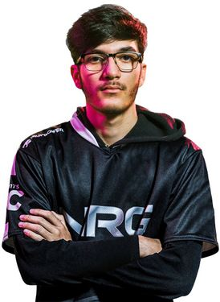

Co dělá Rocket League výjimečným
Rocket League je unikátní kombinace sportu, rychlosti a fyziky. Hráči mohou jezdit po stěnách, létat, skákat a provádět akrobatické triky. Každý zápas je jiný a díky realistické fyzice vznikají situace, které se neopakují.
Hra je jednoduchá na pochopení, ale extrémně náročná na zvládnutí. To vytváří ideální prostředí pro esport, kde rozhodují milisekundy, přesnost a týmová souhra.
Rocket League je navíc zdarma, což přitahuje obrovské množství nových hráčů.
Jeden z nejznámějších profesionálních hráčů a streamerů. SquishyMuffinz
SquishyMuffinz je jeden z nejznámějších streamerů a hráčů Rocket League. Proslavil se svými mechanickými schopnostmi, freestylovými góly a edukativními videi, díky kterým přivedl do hry obrovské množství nových hráčů a výrazně pomohl zvýšit popularitu Rocket League na Twitchi i YouTube.

SquishyMuffinz, jeden z hráčů který přinesl Rocket League takovou popularitu.
Nejvlivnější streamer. Jynxzi
Momentálně jeden z nejvlivnějších streamerů, který v roce 2026 přivádí k Rocket League obrovské množství diváků, a to i přes (nebo díky) svému osobitému stylu hraní na nižší úrovni.

Jynxzi, přivedl do hry zhruba 1 000 000 hráčů, přičemž se zanzamenalo přes 900 000 aktivních hráčů.